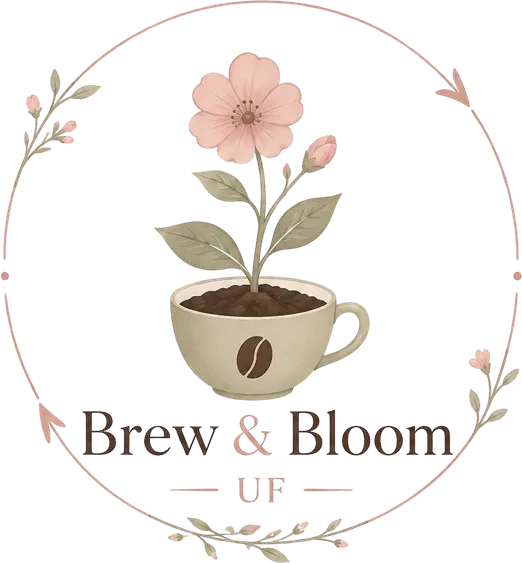

Brew & Bloom UF

Odla hållbart, enkelt Har du köpt ett odlingskit?Klicka här för instruktionernaVi gör det lätt att börja odla hemma. Vårt odlingskit har allt du behöver, och näringen kommer från återvunnen kaffesump från lokala caféer.
Vår idé
Många vill odla men stoppas av samma saker: tid, plats och kunskap. Därför samlar vi det viktigaste i ett färdigt kit med tydliga instruktioner, så att både nybörjare och erfarna odlare kommer igång direkt.
Samtidigt tar vi vara på ett av våra vanligaste matavfall. Kaffesump innehåller näringsämnen som kväve, fosfor och kalium, och i stället för att slängas blir den ett tillskott till din planta.
Produkter
Odlingskit
Kruka, chilifrön, planteringsjord och en liten mängd torkad kaffesump i en stilren förpackning. Med en QR-kod till steg-för-steg-instruktioner.
189 kr
Kaffegödsel
Noggrant insamlad och torkad kaffesump från lokala caféer. Ett naturligt odlingstillskott till de växter du redan har.
59 kr
Om oss
Vi är fyra tjejer från Sjölins Gymnasium Södermalm som alltid delat ett intresse för hållbarhet och kreativitet. Vi vill använda vår kreativitet till att uppmärksamma hållbarhet och göra odling till något enkelt för alla.
Dalia Sherian
Verkställande direktör
Driven, full av kreativa idéer och har ett öga för detaljer.
Kathryn Smith
Ekonomiansvarig
Ansvarsfull och noggrann, och håller alltid fokus.
Nora Blohm
Marknadsföringsansvarig
Social och brinner för sociala medier och företagets image.
Ellie Ahlberg
Inköpsansvarig
Positiv och händig, och driver produktionen framåt.